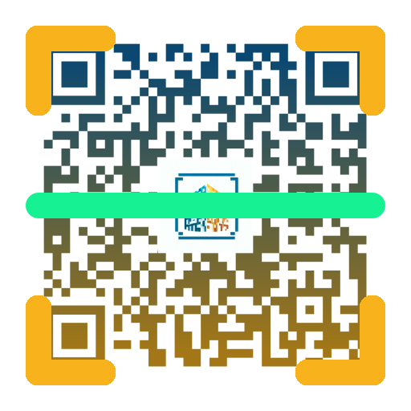

<ion-header no-border class="cabecera">
  <ion-toolbar class="cabecera">
    <ion-buttons slot="start">
      <ion-back-button defaultHref="/ruta-pagina-anterior" text=""></ion-back-button>
    </ion-buttons>
  </ion-toolbar>
</ion-header>

<ion-content [fullscreen]="true" class="fondo">
  <div class="contenedor">
    
  </div>

  <ion-fab vertical="bottom" horizontal="center" slot="fixed">
    <ion-fab-button id="open-toast" expand="block" color="warning" (click)="goToDash()">
      <ion-icon name="camera"></ion-icon>
    </ion-fab-button>
    <ion-toast trigger="open-toast" message="¡Estás presente!" [duration]="2500"></ion-toast>
  </ion-fab>
</ion-content>
